السلسلة 43
السيارة (صنف B) · 40 سؤال. كل سؤال فيه الصورة والصوت. اختار الجواب (ولا جوج إلا كانو صحاح)، ورك على «تأكيد» باش تشوف واش صبتي.
- 40سؤال
- 32باش تنجح
- 1 – 4جواب واحد ولا أكثر
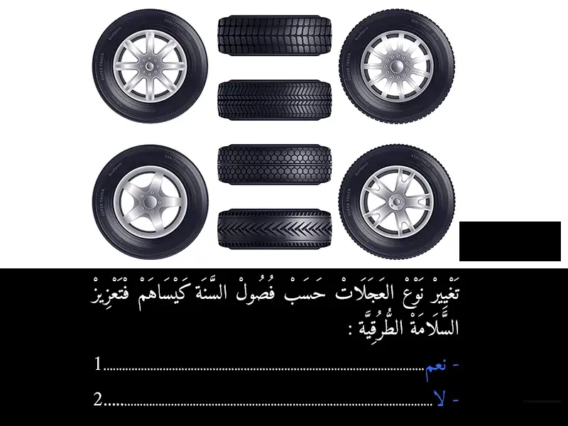
الكلافيي: 1–4 للجواب، Enter للتأكيد وللسؤال الجاي.
السلسلة 43 · النتيجة ديالك
0 / 40
السلسلة 43
السيارة (صنف B) · 40 سؤال، بالصوت، مع الجواب الصحيح والشرح.
السؤال 1
بيّن الجواب
الجواب الصحيح: 1
كل فصل من فصول السنة عندو الظروف ديالو، وكل نوع ديال العجلات كيتناسب مع هاد الظروف. فالصيف، العجلات الخاصة بهاد الفصل كتكون مصممة باش توفر الثبات والتحكم فدرجات الحرارة العالية. وفالشتاء، العجلات الخاصة كتكون مصممة باش تعطيك تماسك مزيان فالأمطار والثلوج. هاد التغيير كيساعد باش السيارة تبقى مستقرة وآمنة فكل ظروف الطريق. إذن، باش تضمن السلامة ديالك وسلامة الآخرين، والمساهمة فتعزيز السلامة الطّرقية من الأفضل تبدل العجلات ديالك حسب الفصل وتستعمل النوع المناسب لكل ظروف. الجواب الصحيح هو رقم 1.
السؤال 2
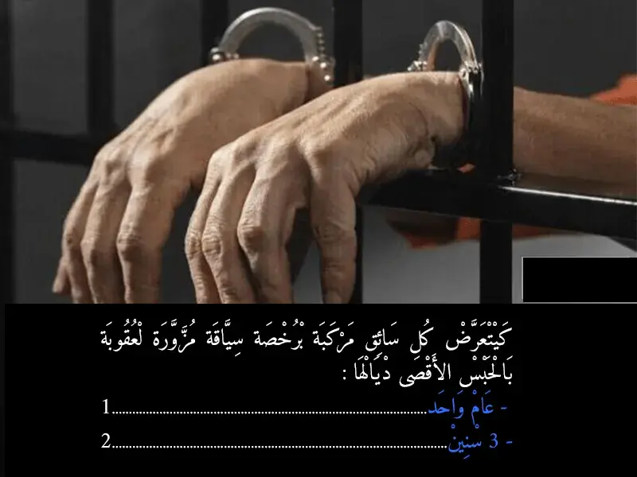
بيّن الجواب
الجواب الصحيح: 2
يعاقب بالحبس من ستة (6) أشهر إلى ثلاث (3) سنوات وبغرامة من 1.200 درهم إلى 5.000 درهم كل شخص يسوق برخصة سياقة مزورة مركبة تتطلب سياقتها الحصول على رخصة سياقة. لا يجوز للمخالف اجتياز امتحان الحصول على رخصة سياقة إلا بعد انصرام أجل يتراوح بين سنة واحدة وسنتين، ابتداء من تاريخ صدور مقرر حائز لقوة الشيء المقضي به. الجواب الصحيح هو رقم 2.
السؤال 3
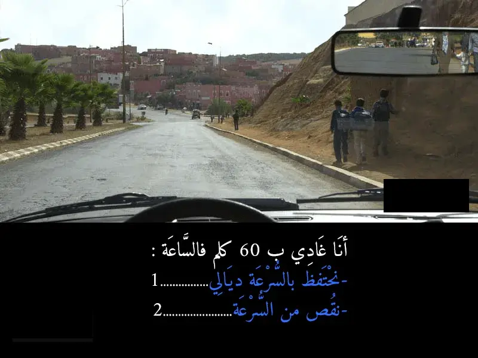
بيّن الجواب
الجواب الصحيح: 2
إلى كنت غادي بسرعة 60 كلم في الساعة وكتشوف قدامك الناس كيتمشاو قريب من الطريق، من الضروري تنقص من السرعة ديالك. هادشي كيعاونك تكون مستعد لأي طارئ ويمنع وقوع الحوادث. الحفاظ على السلامة ديال الراجلين وسلامتك انت كسائق كتطلب تكون حذر وتبطأ السرعة فهاد المواقف. ديما خاصك ترد البال للطريق وتكون مستعد تنقص السرعة إلى شفت شي حاجة ممكن تشكل خطر. الجواب الصحيح هو رقم 2.
السؤال 4
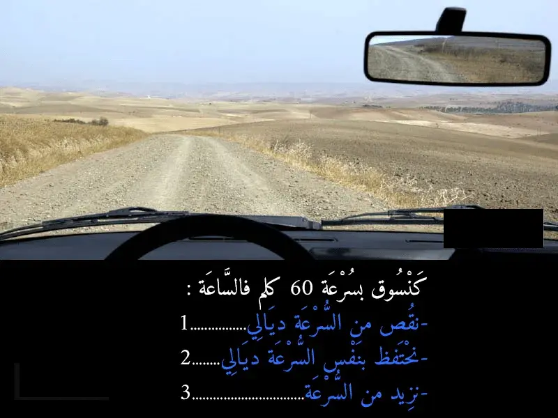
بيّن الجواب
الجواب الصحيح: 1
إذا كنت كنسوق بسرعة 60 كلم في الساعة على طريق غير معبدة كما كيبان في الصورة، من الضروري تنقص من السرعة ديالك. الطرق غير المعبدة كاتكون فيها بزاف ديال المخاطر بحال الحصى والوحل والانعطافات اللي كتقدر تسبب في فقدان السيطرة على السيارة.، إذن يجب عليّ الإنقاص من السرعة. الجواب الصحيح هو رقم 1.
السؤال 5
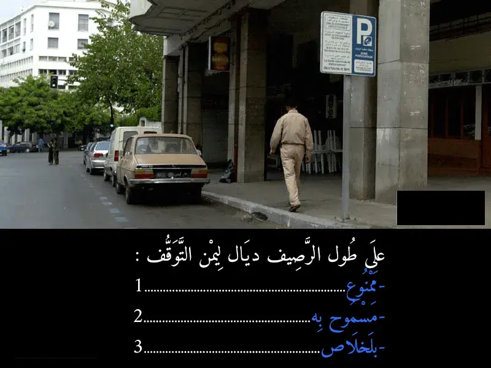
بيّن الجواب
الجواب الصحيح: 2 و 3
على طول الرّصيف على اليمين لا توجد علامة تمنع التوقّف إذن التوقّف مسموح به، والتوقّف سوف يكون مدفوع أي بلخلاص كما تشير إليه اللافتة على يمين الصورة. إذن الجواب الصحيح هو رقم 2 و 3.
السؤال 6
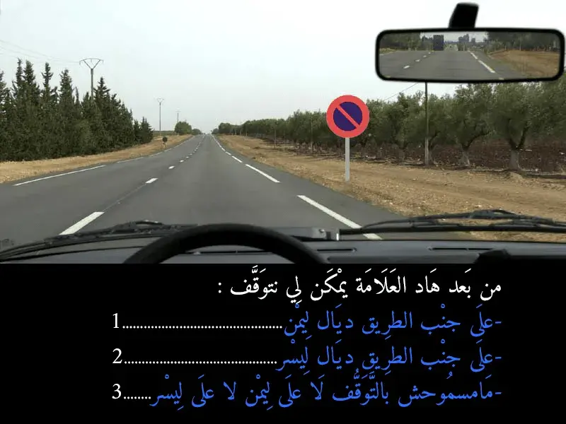
بيّن الجواب
الجواب الصحيح: 3
العلامة تعني المنع من التوقّف، إذن لا يمكنني أبدا التوقّف على الجهة اليمنى أو اليسرى. (أصلا ممنوع التوقّف على الجهة اليسرى من الطريق حتى وإن لم تكن علامة المنع موجودة عندما تكون الطّريق ذات اتّجاهين (تدي تجيب)). إذن، من بعد هاد العلامة، خاصك تكمل الطريق حتى تلقى بلاصة فين مسموح التوقف (غالبا بعد ملتقى الطّرق القادم). إذن الجواب الصحيح هو رقم 3.
السؤال 7
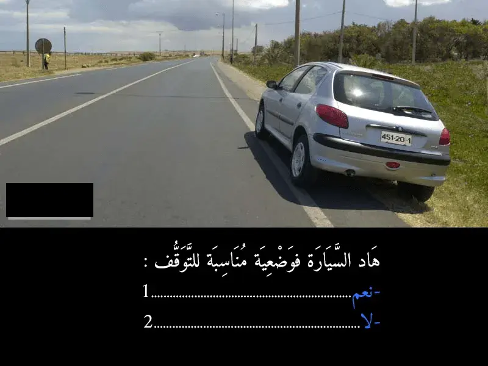
بيّن الجواب
الجواب الصحيح: 2
عندما التوقّف فيجب التوقّف خارج الطّريق بالكامل (في قارعة الطّريق او جنب الطّريق) وليس في الطّريق (لا أتوقّف في الطّريق التي تسير فيها العربات) وكما نلاحظ في الصورة فالسيّارة متوقّف في الطّريق وليس خارج الطّريق. لذلك السيّارة ليست في وضعية مناسبة للتوقّف. إذن الجواب الصحيح هو رقم 2.
السؤال 8
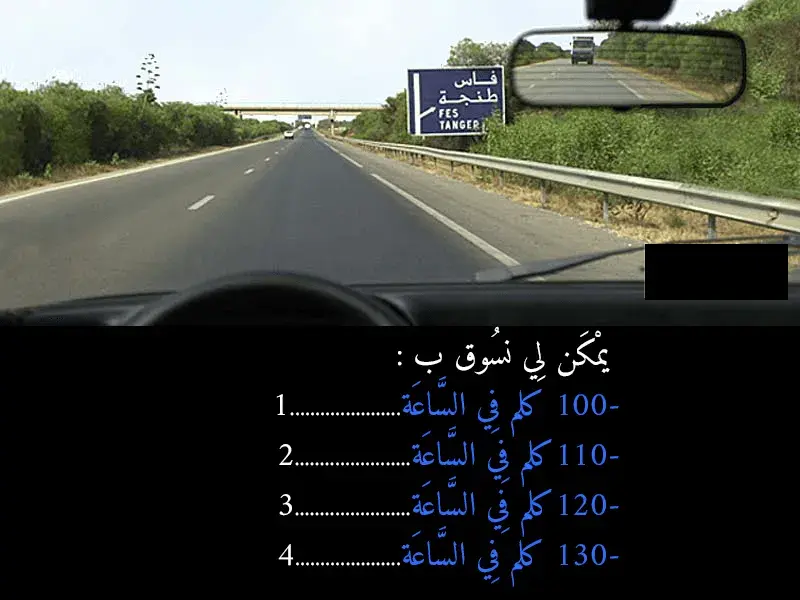
بيّن الجواب
الجواب الصحيح: 1 و 2 و 3
نتواجد في طريق سيار وأقصى سرعة يمكننا السير بها في الطّريق السيّار هي 120 كلم في الساعة، إذن يمكنني السّير بسرعة 100 كلم في الساعة، ويمكنني السّير بسرعة 110 كلم في الساعة ويمكنني أيظا السير بسرعة 120 كلم في الساعة. الجواب الصحيح هو رقم 1 و 2 و 3.
السؤال 9
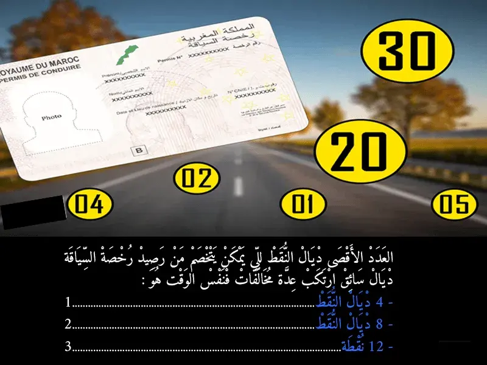
بيّن الجواب
الجواب الصحيح: 2
يرجى التّركيز في هذا السؤال لأنه يتعلق بالمخالفات وليس بالجنح. إذا تعددت المخالفات المرتكبة في آن واحد، فإن عدد النقط الواجب خصمها من رصيد النقط يساوي 8 نقط على الأكثر. الجواب الصحيح هو رقم 2.
السؤال 10
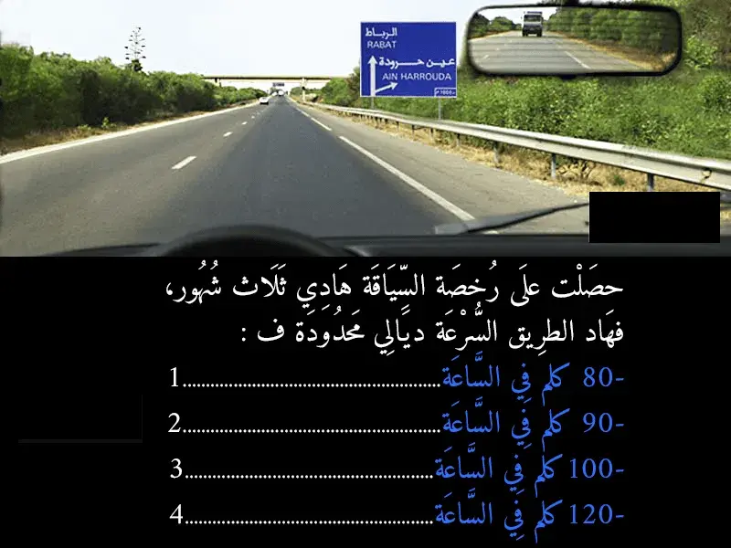
بيّن الجواب
الجواب الصحيح: 2
حتى وإن كنت أتواجد في طريق سيّار والتي فيها السرعة القصوى 120 كلم في الساعة فلا يمكنني السّياقة بهذه السرعة لأنني حصلت على رخصة السياقة منذ فقط 3 شهر وهذا يعني أنني مازلت في الفترة الاختبارية والسرعة القصوى التي يمكنني السّير بها هي 90 كلم في الساعة. الجواب الصحيح هو رقم 2.
السؤال 11
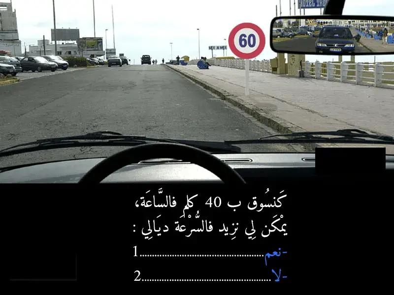
بيّن الجواب
الجواب الصحيح: 1
العلامة الطّرقية تعني تحديد السرعة في 60 كلم في الساعة. وبما أنني أسير بسرعة 40 كلم في الساعة إذن يمكنني الزّيادة في السّرعة بشرط عدم تجاوز سرعة 60 كلم في الساعة. الجواب الصحيح هو رقم 1.
السؤال 12
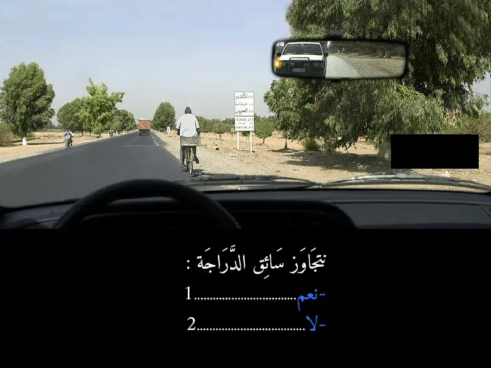
بيّن الجواب
الجواب الصحيح: 2
المرآة الدّاخلية للسيّارة توضّح أنه توجد سيّارة تستعد لتجاوزي. إذن في هذه الحالة لا يمكنني تجاوز سائق الدَّراجة. الجواب الصحيح هو رقم 2.
السؤال 13
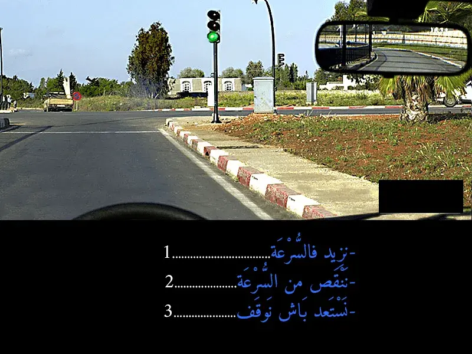
بيّن الجواب
الجواب الصحيح: 2
لدي حق المرور بما أن الإشارة الضّوئية خضراء تسمح لي بالمرور، وبما أنّني قرب ملتقى طرق فيجب عليّ الانتباه وذلك عبر الإنقاص من السّرعة الاستعداد للوقوف لأنه ربّما تكون سيّارة قامت بمخالفة ولم تقم بالوقوف وسوف تقوم بالمرور. لذلك أقوم بالمرور وفقط أقوم بالانتباه بالإنقاص من السّرعة وأن أستعد للوقوف إذا كان هنالك خطر. الجواب الصحيح هو رقم 2 و 3.
السؤال 14
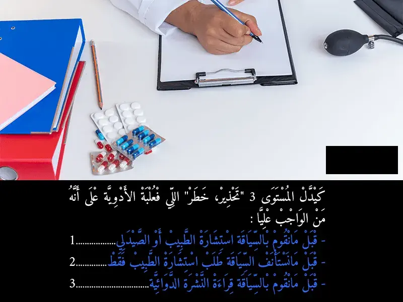
بيّن الجواب
الجواب الصحيح: 2
إلى كنتي كتاخد دواء اللي عندو مستوى 3 ديال الخطر، يعني عندو تأثير كبير على القدرة ديالك باش تسوق، من الضروري تستاشر الطبيب قبل ما تستأنف السياقة. الطبيب غادي يعطيك النصائح الضرورية باش تعرف واش ممكن تسوق ولا لا. قراءة النشرة الدوائية مهمة، ولكن استشارة الطبيب كتكون أكثر دقة وأمان. قبل ما تستأنف السياقة، طلب استشارة الطبيب فقط. الجواب الصحيح هو رقم 2
السؤال 15
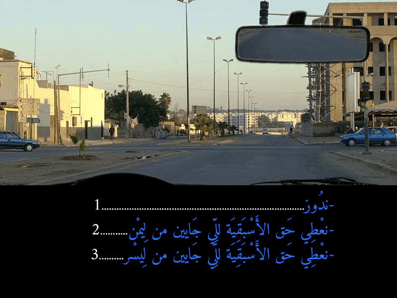
بيّن الجواب
الجواب الصحيح: 2
بما أن الإشارة الضوئية لا تشتغل والضوء الأصفر رفراف لا يشتغل إذن سوف أقوم بتطبيق القاعدة العامة لملتقيات الطّرق وهي الأسبقية للعربات القادمة من الجهة اليمنى، إذن في هذه الحالة سوف أقوم بإعطاء حق الأسبقية للعربات القادمة من الجهة اليمنى. الجواب الصحيح هو رقم 2.
السؤال 16
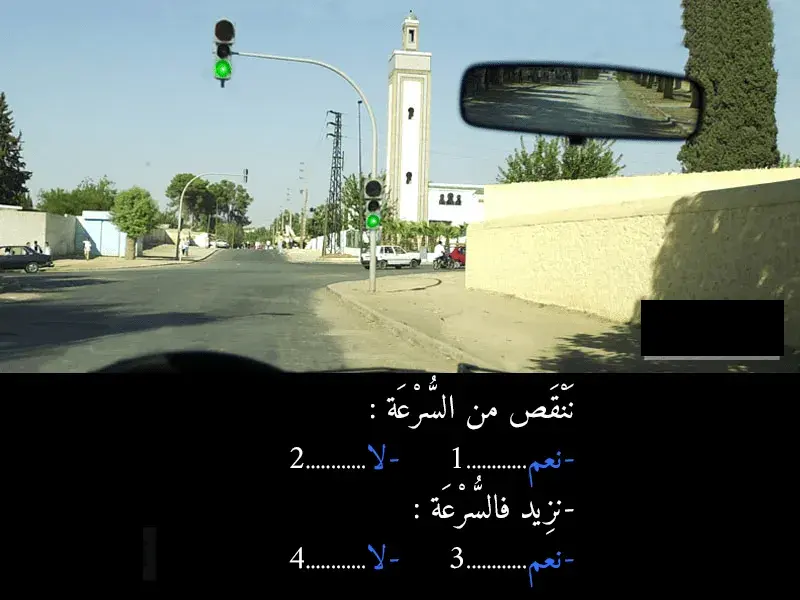
بيّن الجواب
الجواب الصحيح: 1 و 4
فالصورة كيبان بلي الإشارة الضوئية خضراء، ولكن خاصك ديما تكون حذر وتنقص من السرعة خصوصا إلى كنتي قريب من ملتقى الطرق. الملتقيات الطرقية كتطلب منك تكون مركز وتراقب الحركة ديال المركبات والراجلين. الزيادة في السرعة فهاد المواقف كيزيد من خطر الحوادث. إذن، الجواب الصحيح هو أنك تنقص من السرعة وما تزيدش فيها. الجواب الصحيح هو رقم 1 و 4.
السؤال 17
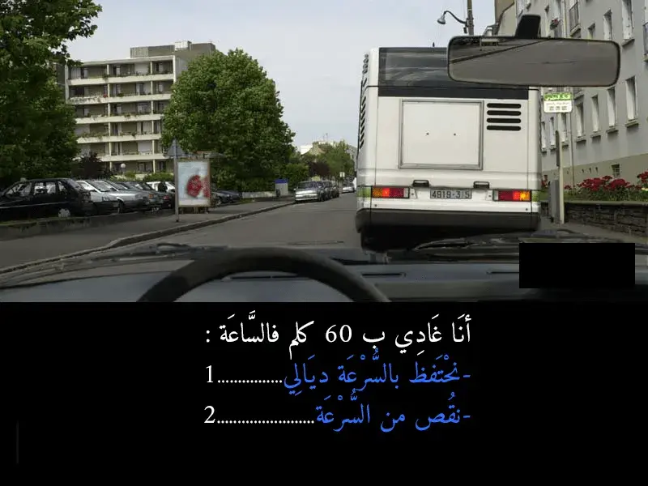
بيّن الجواب
الجواب الصحيح: 2
بما أن الحافلة استعملت الفرامل (الضوء الفرامل الحمراء من الخلف) إذن فهذا يعني على أن الحافلة تستعد للوقوف لأنها وصلت إلى محطة وقوف كما توضّح أيضا الإشارة الطّرقية على اليمين. إذن في هذه الحالة بما أن الحافلة تستعد للوقوف فيجب عليّ الإنقاص من السرعة. الجواب الصحيح هو رقم 2.
السؤال 18
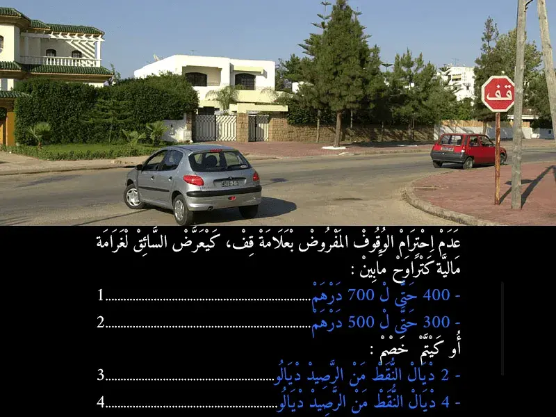
بيّن الجواب
الجواب الصحيح: 1 و 4
عدم احترام الوقوف المفروض بعلامة (قف) كتعتبر مخالفة من الدرجة الأولى، وكتعرض السائق لغرامة مالية تتراوح بين 400 درهم و700 درهم حسب وقت الأداء. بالإضافة، كيتم خصم 4 نقاط من رصيد رخصة السياقة ديالو. هاد الشي كيبين أهمية احترام العلامات الطرقية لضمان السلامة فالطريق وتفادي العقوبات. الجواب الصحيح هو رقم 1 و 4.
السؤال 19
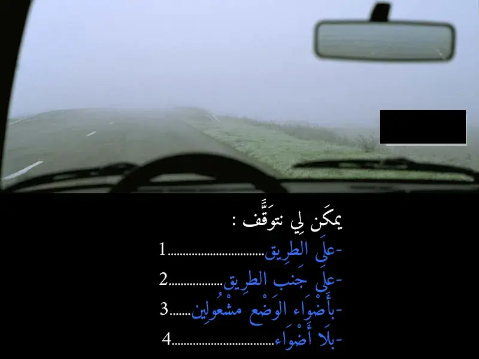
بيّن الجواب
الجواب الصحيح: 2 و 3
دائماً التوقّف يكون على جنب الطّريق وليس على الطريق نفسه (يعني المكان اللي كتسير فيه السيارات). عند التوقّف في هذا المكان، خاصني نشغل أضواء الوضع حيث كاين الضباب، باش السائقين الآخرين ينتبهوا بلي السيارة متوقّفة. إذا ما خليتش أضواء الوضع مشتعلة والسيارة متوقفة، كاين احتمال كبير بلي السائقين الآخرين ما غاديش يشوفوها وغادي نسبب في حادثة. إذن، يمكنني نتوقف على جنب الطريق وأضواء الوضع مشتعلة لضمان السلامة. الجواب الصحيح هو رقم 2 و 3.
السؤال 20
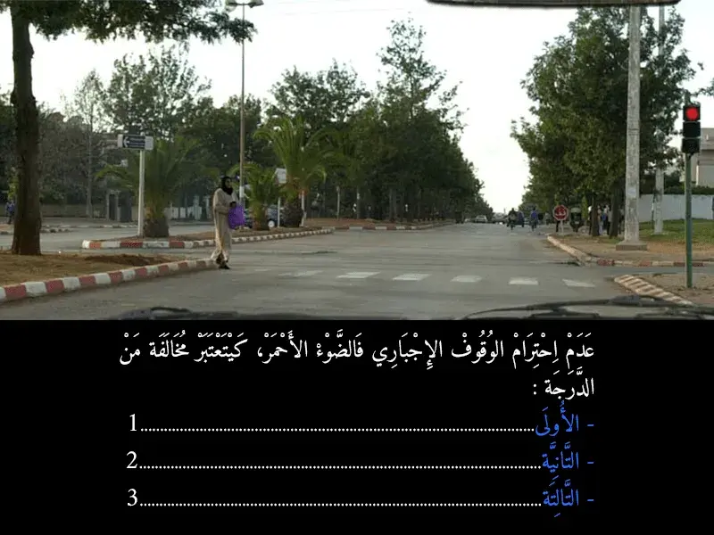
بيّن الجواب
الجواب الصحيح: 1
عدم إحترام الوقوف الإجباري في الضوء الأحمر، يعتبر مخالفة من الدّرجة الأولى. الجواب الصحيح هو رقم 1.
السؤال 21
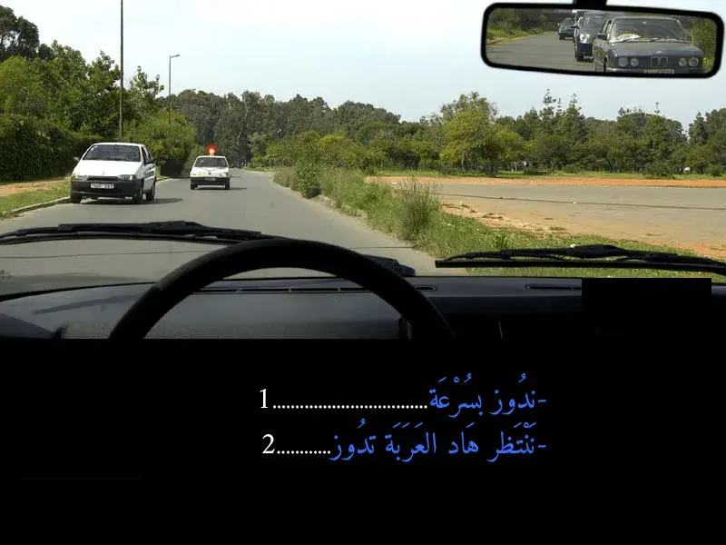
بيّن الجواب
الجواب الصحيح: 2
عندما تواجهك سيارة شرطة قادمة من الأمام وفي جهتها عائق مثل سيارة متوقفة، فإنه يكون من المفترض أن تتوقف سيارة الشرطة وتمنحك حق الأسبقية. لكن في الصورة، يظهر أن سيارة الشرطة في مهمة استعجالية لأن ضوء التنبيه الأحمر فوقها مشتعل. عندما تكون سيارة الشرطة في مهمة استعجالية، فهي تحصل على الأولوية دائما. لذلك، في هذه الحالة، يجب أن تنتظر حتى تمر سيارة الشرطة أولاً قبل أن تواصل السير. الجواب الصحيح هو رقم 2.
السؤال 22
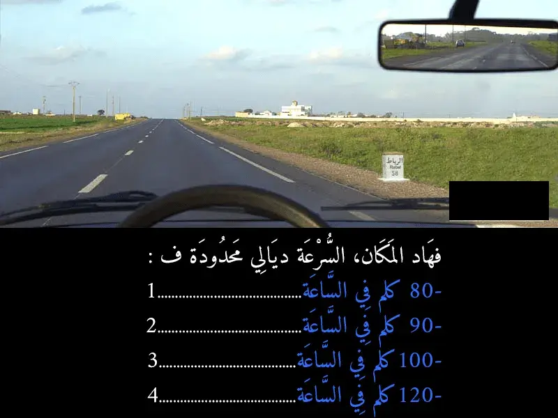
بيّن الجواب
الجواب الصحيح: 3
فالصورة كيبان بلي حنا فطريق وطنية خارج التجمعات السكنية، والسرعة المحددة فهاد الطرق هي 100 كلم في الساعة بما أننا نسير في طريق وطنية. الجواب الصحيح هو رقم 3.
السؤال 23
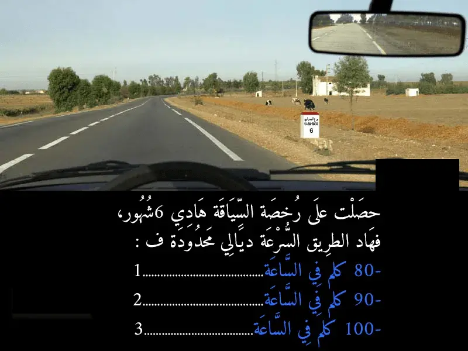
بيّن الجواب
الجواب الصحيح: 2
إلى عندك رخصة السياقة جديدة ومازال مادازش عليها عامين، فالسرعة ديالك محدودة فـ90 كلم في الساعة حتى لو كانت السرعة القصوى فطريق وطنية هي 100 كلم في الساعة. نفس الشيء كينطبق على الطريق السيار (لوطوروت)، حيث حتى لو كانت السرعة القصوى هي 120 كلم في الساعة، خاصك تسوق غير ب90 كلم في الساعة حتى تكمل عامين وتحصل على رخصة السياقة النهائية. هاد الفترة الاختبارية كتهدف لتعليمك السياقة بشكل آمن وتجنب الحوادث. الجواب الصحيح هو رقم 2.
السؤال 24
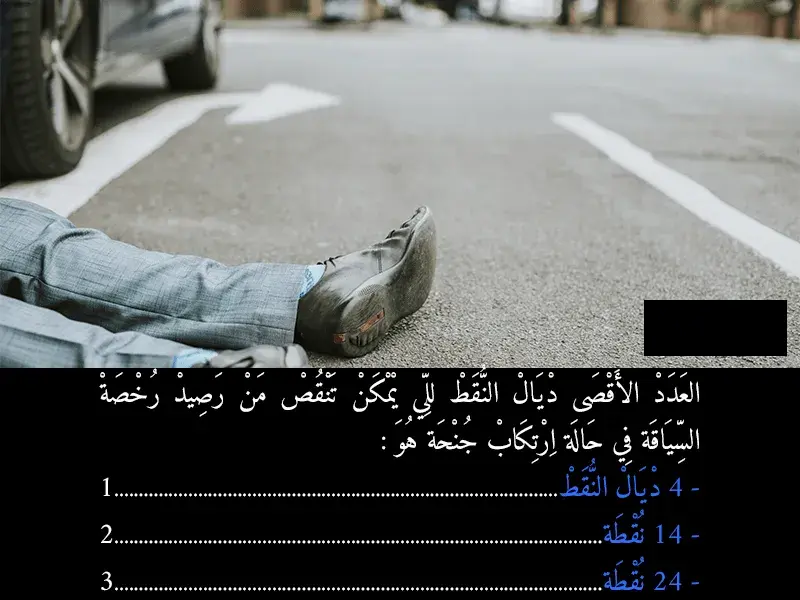
بيّن الجواب
الجواب الصحيح: 2
إلى ارتكبت جنحة واحدة أثناء السياقة، العدد الأقصى ديال النقط اللي يمكن يتخصم من رصيد رخصة السياقة ديالك هو 14 نقطة. هنا كنهضرو على ارتكاب جنحة واحدة وماشي عدة جنحات. هاد القانون كيحمي السائقين من فقدان رخصتهم بسرعة إلى ارتكبوا عدة مخالفات في نفس الوقت. يعني، حتى لو ارتكبت عدة مخالفات في نفس الوقت وكانت من بينها جنحة، غادي يتخصم ليك حتى لـ14 نقطة كحد أقصى. إذن، خاصك تكون حذر وتجنب ارتكاب الجنح والمخالفات باش تحافظ على رصيد النقاط ديالك وتفادى فقدان رخصة السياقة. الجواب الصحيح هو رقم 2.
السؤال 25
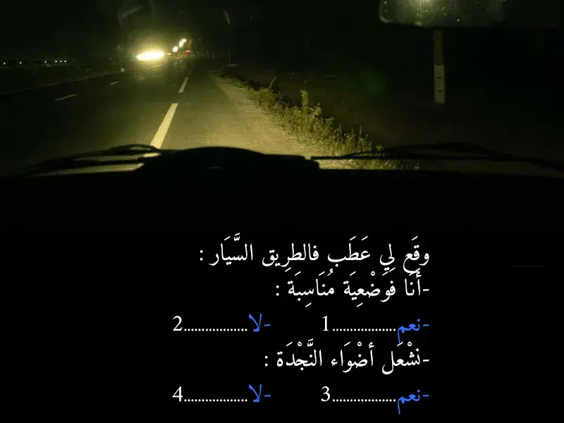
بيّن الجواب
الجواب الصحيح: 1 و 3
عندما يحدث عطب ما في السيارة بسبب مشكل معين، يجب عليّ توجيه السيارة إلى خارج الطريق (جنب الطريق) على الجهة اليمنى كما هو موضح في الصورة. يجب عليّ تشغيل أضواء النجدة لتنبيه السائقين الآخرين بوجود عطب في السيارة ليكونوا على علم بذلك. إذن، في هذه الحالة، أنا في وضعية مناسبة ويجب عليّ تشغيل أضواء النجدة. الجواب الصحيح هو رقم 1 و 3.
السؤال 26
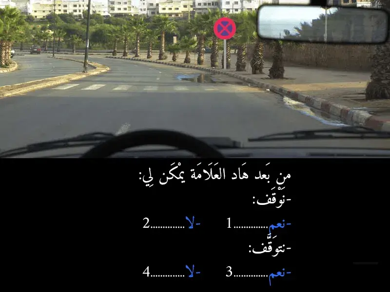
بيّن الجواب
الجواب الصحيح: 2 و 4
العلامة الطرقية اللي كتظهر في الصورة كتعني (ممنوع الوقوف والتوقف) حتى ملتقى الطرق القادم. يعني من بعد هاد العلامة ما يمكنش ليك توقف أو توقف في الجهة ديال الطريق حتى توصل لملتقى الطرق اللي جاي. الجواب الصحيح هو رقم 2 و 4.
السؤال 27
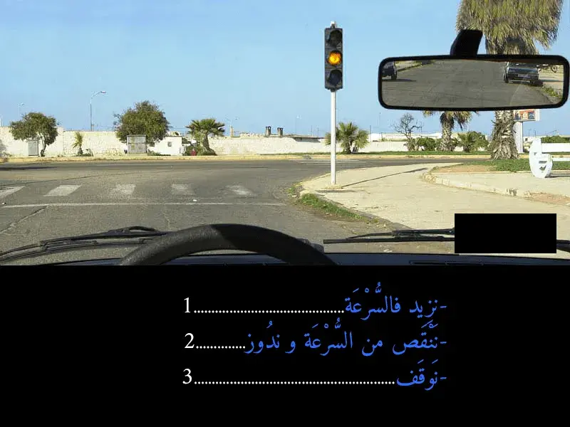
بيّن الجواب
الجواب الصحيح: 3
فالصورة كيبان بلي الضوء راه أصفر، وهاد الشي كييعني بلي الضوء الأحمر غادي يجي من بعده. ملي الضوء كيكون أصفر، من الأفضل الإستعداد للوقوف كامل حيت الضوء الأحمر على وشك يشتعل. الجواب الصحيح هو رقم 3.
السؤال 28
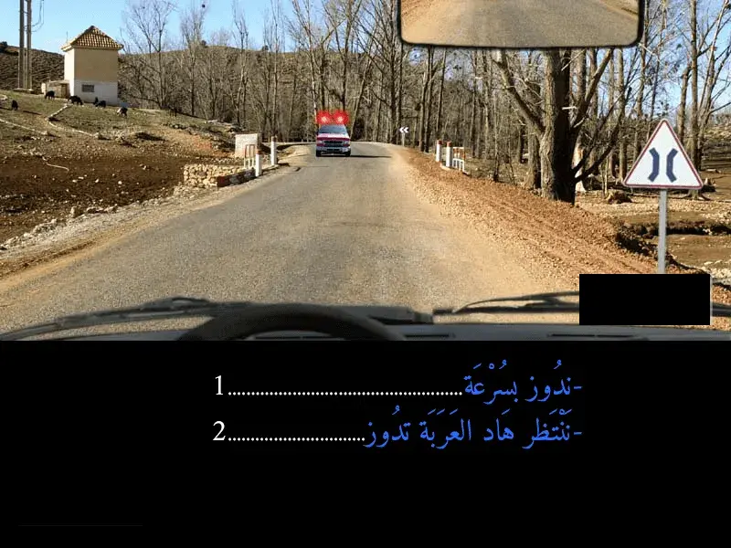
بيّن الجواب
الجواب الصحيح: 2
سيارة الإسعاف في مهمة مستعجلة، وهذا واضح من خلال ضوء التنبيه الأحمر المشتعل فوقها. عندما تكون سيارة الإسعاف في مهمة استعجالية، تكون لها الأولوية دائماً. لذلك، في هذه الحالة، يجب عليّ انتظار مرور سيارة الإسعاف أولاً قبل أن أتابع السير. الجواب الصحيح هو رقم 2.
السؤال 29
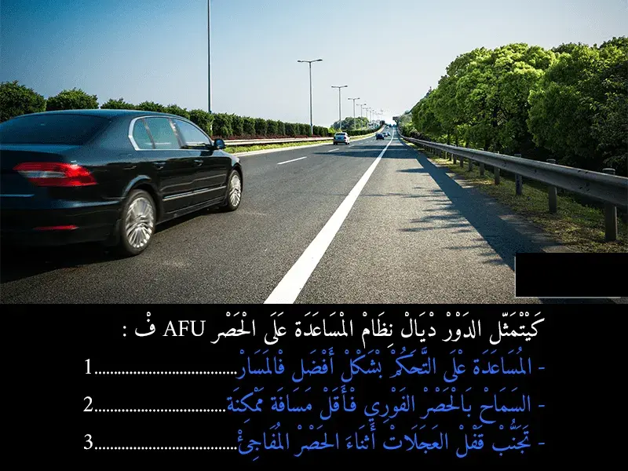
بيّن الجواب
الجواب الصحيح: 2
نظام المساعدة على الحصر AFU كيعاون السائقين باش يوقفو السيارة بسرعة فالمواقف الطارئة. مثلاً، إلى كان شي خطر قدامك وبغيتي توقف السيارة بسرعة، هاد النظام كيساعد الفرامل ديال السيارة تخدم بأقصى قوة باش توقف فمسافة قصيرة. هاد الشي كيقلل من احتمال وقوع الحوادث حيت كيعطيك فرصة توقف السيارة بشكل فعال وفوري. النظام كيتحكم فالفرامل باش يضمن الحصر يكون قوي وفعال. إذن، الجواب الصحيح هو السماح بالحصر الفوري فأقل مسافة ممكنة. الجواب الصحيح هو رقم 2.
السؤال 30
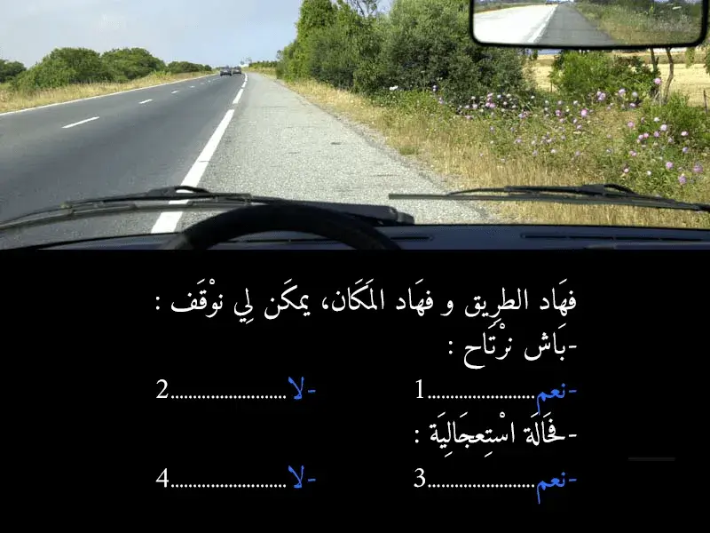
بيّن الجواب
الجواب الصحيح: 2 و 3
التوقف في الشريط الاستعجالي (اللي كيبان فالصورة) مخصص غير للحالات الاستعجالية، وماشي باش السائق يوقف يرتاح. هاد الشريط كيتستعمل غير إلى وقع عطب فالسيارة، ولا إلى كان شي ظرف طارئ اللي كيطلب الوقوف الفوري. إلى بغيت توقف باش ترتاح، كاينين محطات الاستراحة اللي كتكون متواجدة على طول الطريق، وهما الأماكن المناسبة والآمنة لهاد الغرض. إذن، فهاد الحالة، ما يمكنش ليك توقف باش ترتاح فالشريط الاستعجالي (الجواب 2)، ولكن يمكن ليك توقف فحالة استعجالية (الجواب 3). محطات الاستراحة هي الأماكن اللي خاصك تستعملها باش ترتاح فالطريق. الجواب الصحيح هو رقم 2 و 3.
السؤال 31
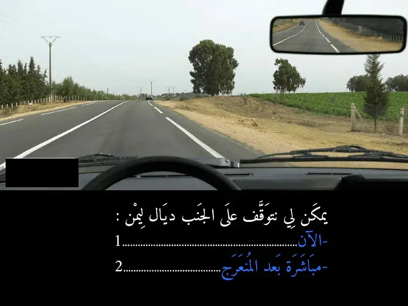
بيّن الجواب
الجواب الصحيح: 1
فالصورة اللي كتشوف، كاين منعرج قدام. التوقف الآن قبل المنعرج آمن حيت كيعطي فرصة للسائقين الآخرين يشوفوك من بعيد ويكونوا منتبهين ليك. أما التوقف مباشرة بعد المنعرج، فيمكن يكون خطر حيت السائقين اللي جايين من وراك ما غاديش يشوفوك حتى يخرجوا من المنعرج، وهادشي كيكون مفاجئ ليهم ويمكن يسبب فحادث. إذن، من الأفضل تتوقف الآن قبل المنعرج حيث كاين رؤية واضحة وكيضمن السلامة ديالك وسلامة السائقين الآخرين. الجواب الصحيح هو رقم 1.
السؤال 32
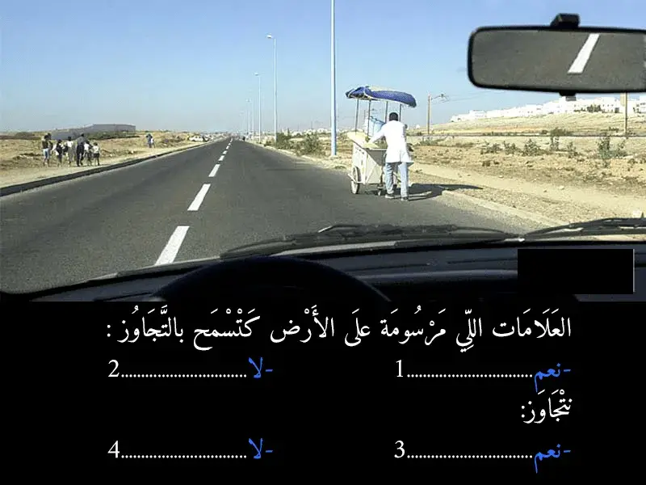
بيّن الجواب
الجواب الصحيح: 1 و 3
التشوير الأفقي على الطريق خطوط متقطعة، فهي تعني بلي التجاوز مسموح. فالصورة كيبان بلي ما كايناش سيارات جاية من الاتجاه المعاكس، وما كايناش سيارات من الخلف كتستعد تتجاوزك. الراجلين اللي كيبانو في الصورة كاينين على الجهة اليسرى وبعيدين على الطريق. إذن، فالعلامات اللي مرسومة على الأرض كتسمح ليك بالتجاوز، ويمكن ليك تقوم بالتجاوز بأمان حيث ما كاين حتى خطر من السيارات الجاية من الاتجاه المعاكس ولا من الخلف. ديما تأكد من السلامة ديالك وسلامة الآخرين قبل ما تقوم بأي عملية تجاوز. الجواب الصحيح هو رقم 1 و 3.
السؤال 33
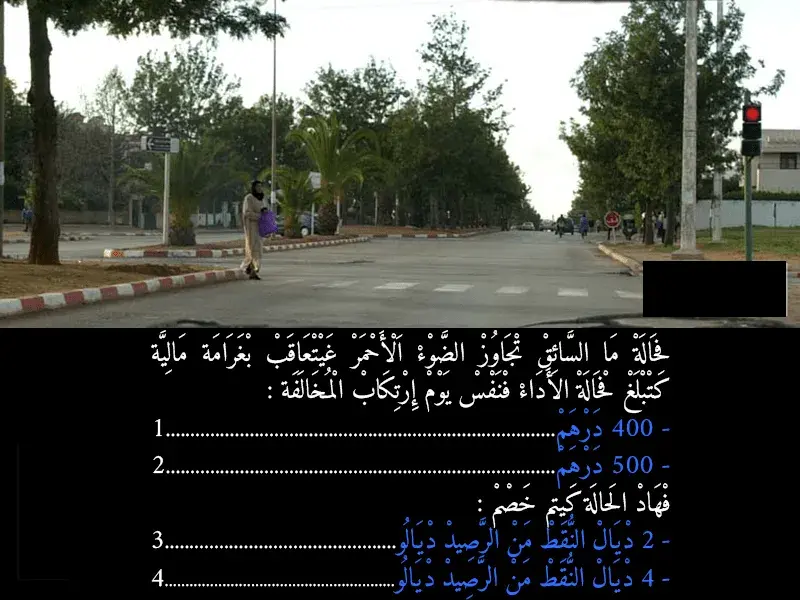
بيّن الجواب
الجواب الصحيح: 1 و 4
إلى السائق تجاوز الضوء الأحمر، كيرتكب مخالفة من الدرجة الأولى. فهاد الحالة، كيتم تغريم السائق 400 درهم إذا خلص الغرامة فـ24 ساعة الأولى من بعد ارتكاب المخالفة. إلا ما خلصهاش فهاد الأجل، الغرامة كتزاد لـ500 درهم فـ15 يوم، وإذا زادت المدة حتى 30 يوم، كتولي الغرامة 700 درهم. بالإضافة لهذا، كيتم خصم 4 نقاط من رصيد رخصة السياقة ديالو. إذن، التجاوز ديال الضوء الأحمر كيكون عندو عواقب مالية وكيأثر على الرصيد ديال النقاط ديالك، ولهذا من الضروري تحترم إشارات المرور لضمان السلامة ديالك وسلامة الآخري. الجواب الصحيح هو رقم 1 و 4. إلى السائق تجاوز الضوء الأحمر، كيرتكب مخالفة من الدرجة الأولى. فهاد الحالة، كيتم تغريم السائق 400 درهم إذا خلص الغرامة فـ24 ساعة الأولى من بعد ارتكاب المخالفة. إلا ما خلصهاش فهاد الأجل، الغرامة كتزاد لـ500 درهم فـ15 يوم، وإذا زادت المدة حتى 30 يوم، كتولي الغرامة 700 درهم. بالإضافة لهذا، كيتم خصم 4 نقاط من رصيد رخصة السياقة ديالو. إذن، التجاوز ديال الضوء الأحمر كيكون عندو عواقب مالية وكيأثر على الرصيد ديال النقاط ديالك، ولهذا من الضروري تحترم إشارات المرور لضمان السلامة ديالك وسلامة الآخري. الجواب الصحيح هو رقم 1 و 4.
السؤال 34
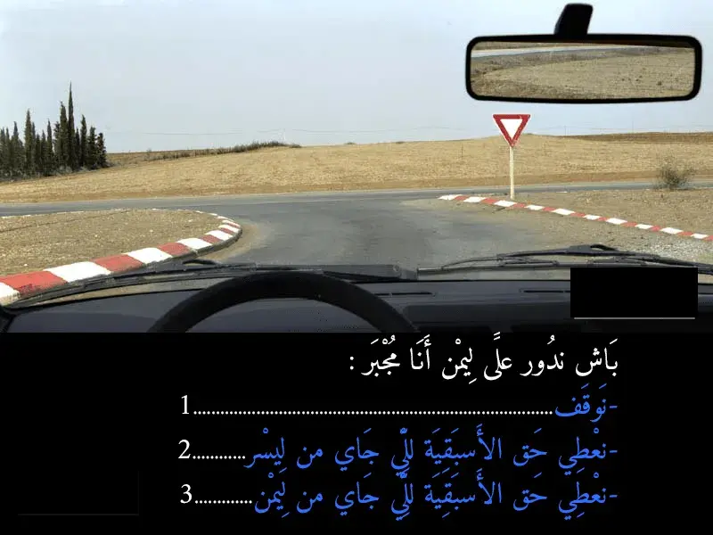
بيّن الجواب
الجواب الصحيح: 2 و 3
فالصورة كيبان علامة (إعطاء الأسبقية)، اللي كتطلب منك تعطي حق الأسبقية لجميع السيارات اللي جايين من الجهة اليمنى واليسرى. يعني، إلا كنت باغي تدور على اليمين، خاصك تعطي الأسبقية للسيارات اللي جايين من ليسر (الجواب 2) واللي جايين من اليمين (الجواب 3). هاد العلامة كتعني بلي خاصك توقف حتى تمر جميع السيارات اللي جايين من الطريق الرئيسي قبل ما تدخل للطريق. هاد الشي كيضمن السلامة ويمنع الحوادث. إذن، فهاد الحالة، خاصك تعطي حق الأسبقية لكل السيارات اللي جايين من الاتجاهات الأخرى. الجواب الصحيح هو رقم 2 و 3.
السؤال 35
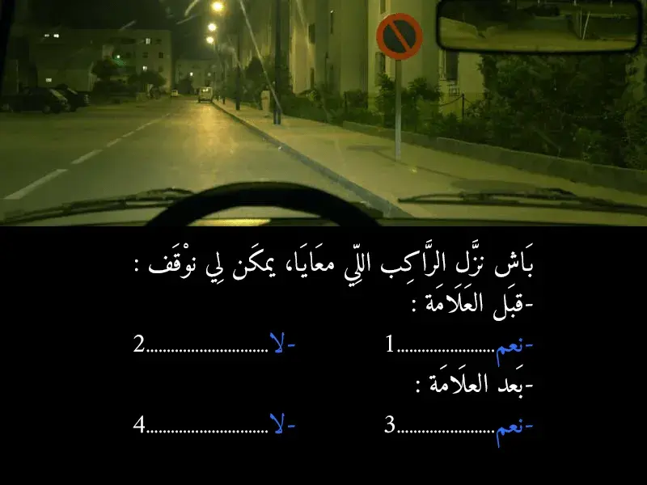
بيّن الجواب
الجواب الصحيح: 1 و 3
العلامة الطرقية اللي كتشوف فالصورة كتعني (ممنوع التوقف)، بمعنى ما يمكنش تركن السيارة وتغلقها وتخليها متوقفة. ولكن مسموح ليك توقف السيارة لفترة قصيرة باش تنزل الراكب اللي معاك أو تنزل البضائع، ثم تكمل السير. إذن، يمكن ليك توقف لفترة قصيرة وتنزل الراكب سواء قبل العلامة أو بعد العلامة، حيث العلامة كتعني ممنوع التوقف الطويل ولكن الوقوف لفترة قصيرة مسموح به. الجواب الصحيح هو رقم 1 و 3.
السؤال 36
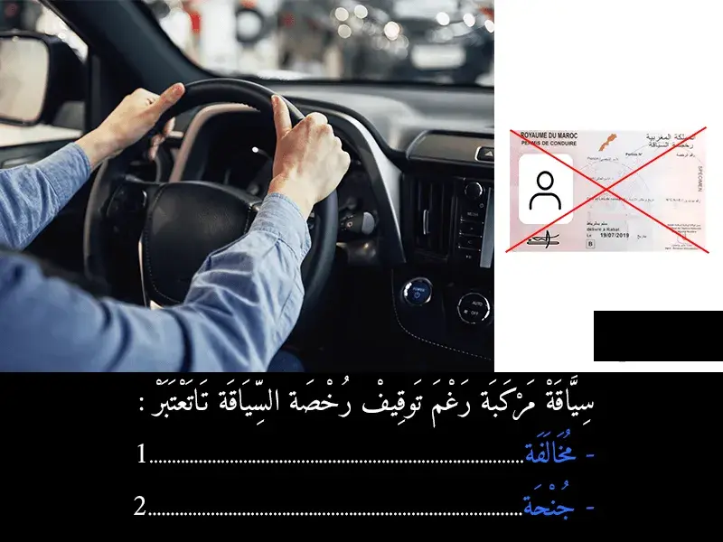
بيّن الجواب
الجواب الصحيح: 2
إلى كانت رخصة السياقة ديالك موقوفة، ما خاصكش تسوق لا سيارة ولا أي مركبة أخرى على الطريق العمومية. إلى تجرأت وسقت شي مركبة اللي كتحتاج لرخصة سياقة، غادي تتعرض لغرامة مالية ما بين 2.000 درهم و8.000 درهم. إلى كان السائق عندو مخالفة كبيرة لدرجة توقيف رخصة السياقة، فهدا كيعني بلي ماشي مؤهل يسوق لفترة معينة. باش نحميو الناس من أي خطر ممكن، خاص السائق يحترم هاد القرار وما يسوقش حتى يرجع ليه الحق يسوق بطريقة قانونية. الجواب الصحيح هو رقم 2.
السؤال 37
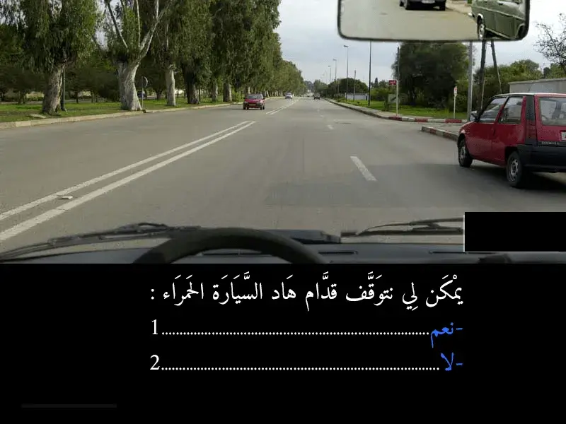
بيّن الجواب
الجواب الصحيح: 2
الرصيف مصبوغ باللون الأبيض والأحمر، وهاد اللون كيشير بلي التوقف ممنوع. بالإضافة، حنا قراب من ملتقى الطرق، والتوقف قرب ملتقى الطرق ممنوع أيضا. هاد الشي كيعني بلي ما يمكنش التّوقف قدام هاد السيارة الحمراء. إذن، في هاد الحالة، ما يمكنش التّوقف هنا حيث التوقف ممنوع بسبب الألوان على الرصيف وكوننا قراب من ملتقى الطّرق. الجواب الصحيح هو رقم 2.
السؤال 38
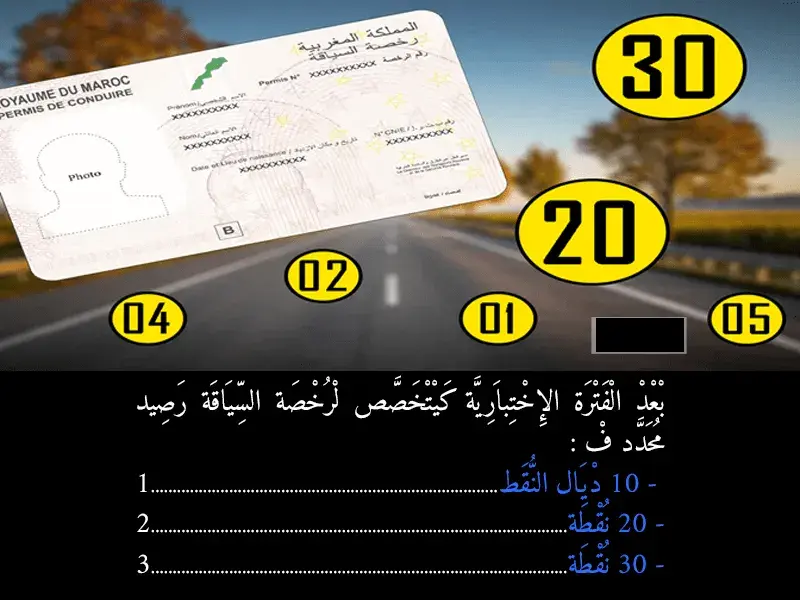
بيّن الجواب
الجواب الصحيح: 3
تتوفر رخصة السياقة على رصيد عشرين (20) خلال الفترة الاختبارية و المحددة في سنتين (2) تبتدئ من تاريخ تسليمها و ثلاثين نقطة (30) عندما تصبح هذه الرخصة نهائية. ملاحظة: مع مراعاة رصيد الرخصة يجب ألا يقل على 7 نقط، لكي يخصص للرخصة من جديد رصيد من النقط يحدد في 30 نقطة. الجواب الصحيح هو رقم 3.
السؤال 39
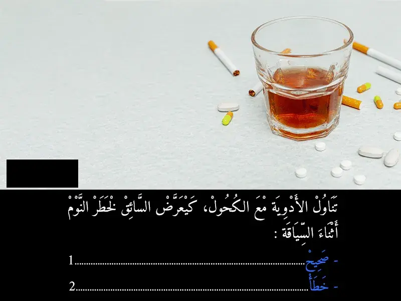
بيّن الجواب
الجواب الصحيح: 1
تناول الأدوية مع الكحول كيكون خطر بزاف على السائق. الكحول بوحدو كيأثر على التركيز والقدرة على التحكم، ولكن منين كتضاف ليه الأدوية، التأثير ديالو كيولي أخطر. هاد الشي كيقدر يسبب في النعاس الشديد وعدم الانتباه، وهذا كيعني بلي السائق كيكون معرض بزاف لوقوع الحوادث. إذن، تناول الأدوية مع الكحول صحيح كيعرّض السائق لخطر النوم أثناء السياقة، وهاد الشي خطر كبير على السائق وعلى الناس الآخرين في الطريق. الجواب الصحيح هو رقم 1.
السؤال 40
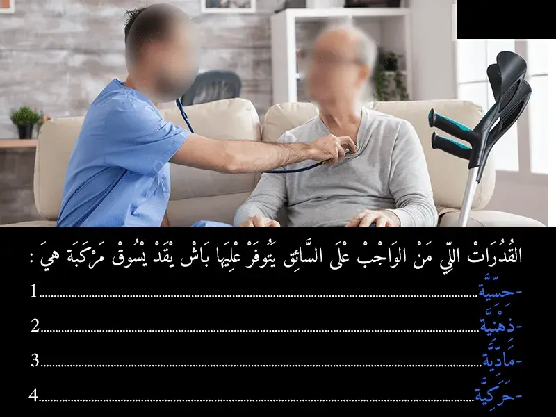
بيّن الجواب
الجواب الصحيح: 1 و 2 و 4
القدرات اللي من الواجب على السائق يتوفر عليها باش يقدر يسوق مركبة هي: حسية: السائق خاص يكون عندو نظر وسمع جيدين باش يشوف الطريق ويسمع الأصوات اللي كتحذر من المخاطر. ذهنية: السائق خاص يكون مركز ومتمكن من اتخاذ القرارات بسرعة باش يتعامل مع المواقف المفاجئة. حركية: السائق خاص يكون قادر يتحكم في السيارة بسهولة، يعني يحرك يديه ورجليه بدقة وسرعة باش يسوق بأمان. مادية: القدرات المادية كتعني تكون السيارة في حالة جيدة وتكون عندك الموارد باش تدير الصيانة ديالها. ولكن، القدرات المادية ما كتعتبرش من القدرات الشخصية اللي خاص السائق يتوفر عليها بشكل مباشر. القدرات المادية مهمة، ولكنها مرتبطة بصيانة السيارة وضمان جاهزيتها، وماشي مرتبطة بالقدرات الشخصية للسائق. لهذا السبب، (مادية) ما كتكونش ضمن الإجوبة الصحيحة المتعلقة بالقدرات الشخصية اللي خاص السائق يتوفر عليها. الجواب الصحيح هو رقم 1 و 2 و 4.